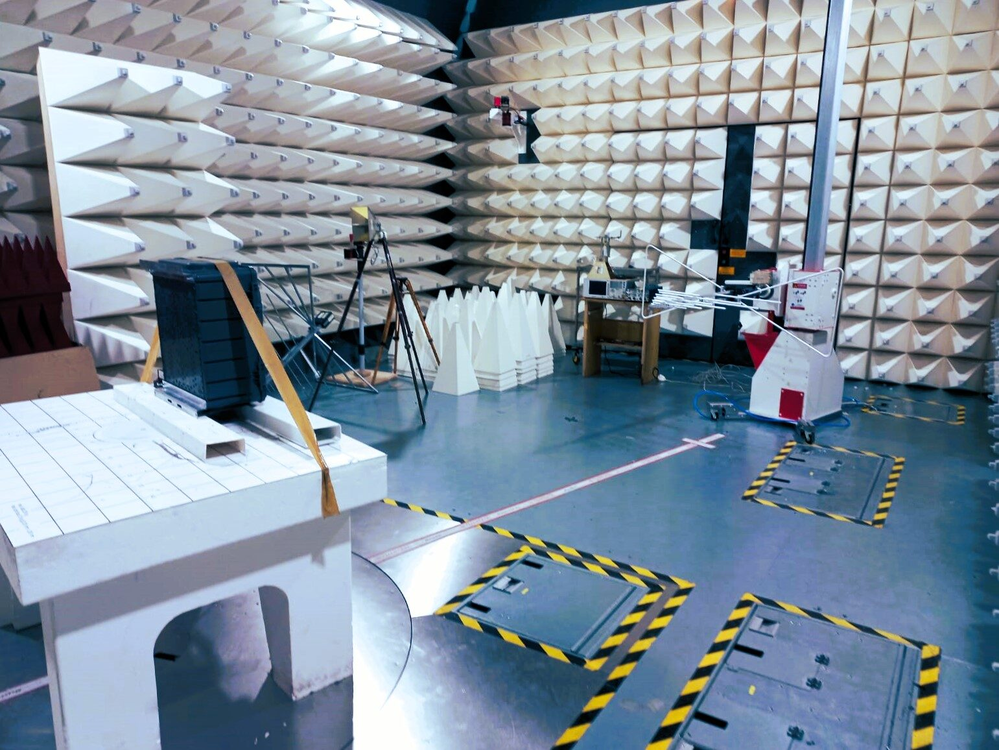
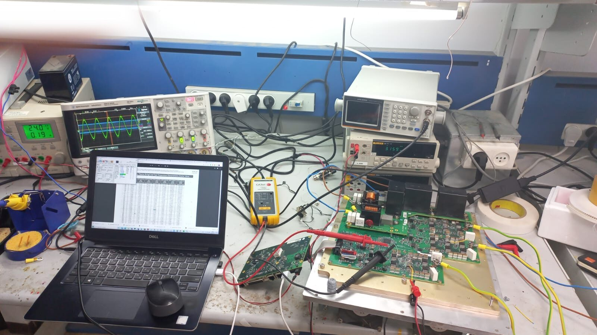
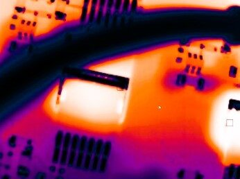

What passes on the bench can still fail in the field. We test before it ships.
Some faults only show up on site. We go there — with equipment, not just a description.


Traced back — thermal imaging, bench measurement, schematic review — to the root cause.
Discuss a failure investigationA failed measurement becomes a revised layout in days, not a shipping cycle.
The engineers who designed it are the ones who watch it fail.
We design and test to a standard that assumes the result will be closely examined.